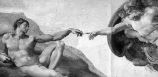

Vatikan Sarayı’ndaki Sistin Şapeli en çok, 1508 ile 1512 yılları arasında Michelangelo’nun (1475-1564) resim yaptığı tavanı ile ünlüdür. Odanın duvarlarını kaplayan freskler, Sandro Botticelli (1445-1510), Pietro Perugino (1450-1523), Luca Signorelli (1445-1523) ve diğer erken dönem Rönesans ustaları tarafından yapılmıştır. Resimlerin altındaki alan bir zamanlar Raphael (1483-1520) tarafından tasarlanan duvar halıları ile kaplıydı.

“Sistin” kelimesi, tapınağın orijinal sahibi olan Papa IV. Sixtus’un isminden kaynaklanır. Eski Ahit’te anlatılan Süleyman’ın Tapınağı’nın boyutlarına göre, binanın kendisi 1475 ile 1483 arasında inşa edildi. 1507’de Papa II. Julius, Michelangelo’ya, ilk başta Pier Matteo d’Amelia tarafından yapılan yıldızlarla dolu gökyüzü resmi ile kaplı kubbeyi, tavanı tekrar yapması görevini verdi. Michelangelo başlangıçta bu görevi almaya gönülsüzdü, çünkü resim yapma konusunda çok az tecrübesi vardı. Buna rağmen insanoğlunun yaratılışını, düşüşünü ve kurtuluşunu betimleyen 300’den fazla figürle dolu geniş resimsel bir plan yaratmayı başardı. Tavanın tamamını kendisinin tasarladığını ve resimleri yaptığını iddia etmesine rağmen, kendisine bir ilahiyat danışmanı ve resim asistanları sağlandığı kuvvetli bir ihtimaldir. Şiirleri, iskelenin tepesinde arkaya doğru yatar pozisyonda resim yapmanın ne kadar zor olduğunu anlatır.
Yaratılış’tan dokuz sahne tavanın merkezine doğru dökülür. İlk üç resim Yaratılış’a, sonraki üçü Âdem ve Havva’nın hikâyesine ve son üçü ise Nuh’un hikâyesine adanmıştır. Michelangelo, fırçayla daha fazla tecrübe kazanana kadar Tanrı’yı temsil etmeye tereddüt etmiş ve Nuh’tan başlayarak tüm resimleri yapmıştır. Sahneleri bölen mimari çerçevenin üzerinde oturanlar, “ignudi” olarak bilinen nü lerdir. Kutsal kitap metinleri taşıyan daha küçük nü ler, tüm tavan boyunca sistemli olarak düzenlenen resmedilmiş bronz madalyonlarda görünür. Odanın köşelerindeki dört kubbe, İsrailliler’in sonsuz kurtuluşunun sahnelerini gösterir. Eski Ahit’in yedi büyük peygamberi ve beş pagan kâhin kadın (Roma mitolojisinden Hıristiyan geleneğin içine giren büyücü kadınlar), tavanın dayanak noktaları boyunca oturtulmuştur. Onların altında yer alan on altı bacada İsa’nın ataları resmedilmiştir. Michelangelo, mabedin kardinaller için ayrılmış kısmının üzerine Tanrı’yı resmetmeye dair oldukça dikkatliydi.
Fuji Film’in sponsor olduğu fresklerin tümünün restorasyonu, 1981 ile 1994 yılları arasında yürütülmüştür. Temizlik, çoğu modern sanat tarihçisini şaşırtan bir ifşaatı, Michelangelo’nun aşırı derecede canlı ve parlak renkler kullandığını açığa çıkardı.
İtalya seyahati sırasında tavana hayran olan 18. yüzyıl Alman bilgini Johann Wolfgang von Goethe, “Hiç kimse Sistin Şapeli’ni görmeden bir insanın başarma kapasitesinin ne olduğu konusunda gerçek bir fikir sahibi olamaz” demiştir.